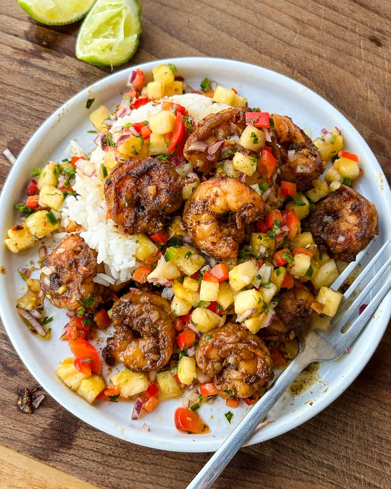

Pineapple Salsa Cajun Shrimp Recipe:

Description:
Chile Lime Shrimp with Pineapple Salsa… super easy, healthy, and full of flavour.
They also cook in no time at all! We had them over a bed of steamed jasmine rice,
but this combo goes great with some fried plantains, yuca or sautéed vegetables.
Also incredible as a taco! Adding a bit of butter at the end is optional,
but it will add a lot of flavour to the shrimp. You can omit it to keep things Whole30 or
substitute ghee
Ingredients:
For the pineapple salsa:
- 2 cups diced fresh pineapple
- medium red bell pepper, diced
- 1/2 medium red onion, diced
- 1 jalapeño, seeded and diced
- 2 tablespoons finely chopped fresh cilantro
- Zest and juice of 1 lime
- 1 tablespoon extra-virgin olive oil
- Kosher salt and freshly-cracked black pepper, to taste
For the cajun shrimp:
- 1 pound 16-20 shrimp, peeled and deveined
- 2 tablespoons extra-virgin olive oil, divided
- 1/2 teaspoon chile powder
- 1/2 teaspoon paprika
- 1/2 teaspoon onion powder
- 1/2 teaspoon garlic powder
- 1/2 teaspoon ground coriander
- 1/2 teaspoon ground cumin
- 1/4 teaspoon kosher salt
- 1/4 teaspoon freshly-cracked black pepper
- 1 tablespoon grass-fed butter, optional, substitute ghee for Whole30
- 3 cloves garlic, finely chopped
- Juice of ½ lime, plus extra, to taste
Steps:
For the pineapple salsa:
- In a bowl, combine the pineapple, red pepper, onion, jalapeño, cilantro, lime zest,
lime juice and olive oil. Season with a pinch of salt and pepper and toss to combine.
Let sit for 5 minutes before tasting for seasoning and adjusting with salt, pepper or lime juice,
as desired. Cover and set aside until ready to serve. Leftovers can be refrigerated up to 5 days.
For the cajun shrimp:
- In a bowl, combine the shrimp, 1 tablespoon olive oil, chile powder, paprika, onion powder,
garlic powder, ground coriander, ground cumin, salt and pepper. Toss everything to coat.
- Preheat a stainless-steel frying or non-stick frying pan over medium heat. Add 1 tablespoon olive oil
and heat until shimmering. Carefully add the shrimp and evenly spread into a single layer.
Cook the shrimp, undisturbed, until golden brown, 90 seconds. Flip the shrimp and cook the other side
until golden brown, 90 more seconds. Add the butter or ghee, if using, and garlic and cook, stirring,
until the garlic is fragrant, around 60 seconds. Add the lime juice and toss everything to coat.
- Transfer the shrimp to a platter and serve with the pineapple salsa.